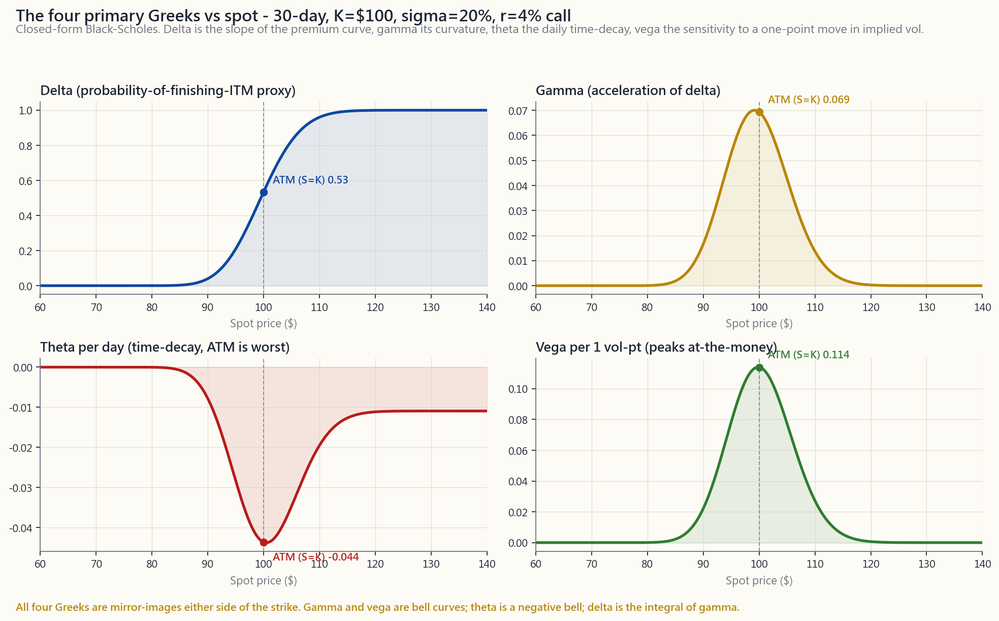
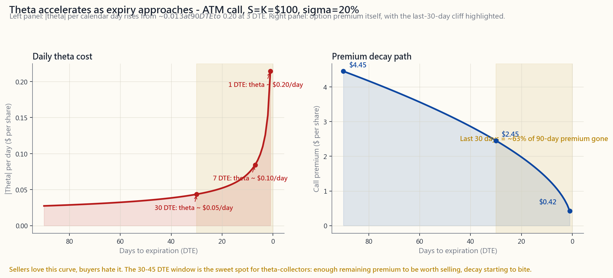

Week 29: The Greeks - Delta, Gamma, Theta, Vega, Rho
1. Why This Is Important
Weeks 25-28 taught you the mechanics of options: what a call is, what a put is, how to sell a covered call against stock you own, how to sell a cash-secured put against cash you would deploy anyway. You can already open positions and you understand the payoff diagrams at expiration. What you cannot yet do is answer the questions a position asks of you before expiration: the underlying moved $2 today, why did my call only go up $0.40? I sold a put two weeks ago, the stock has not moved, why am I up half my premium already? The S&P is flat and the VIX collapsed five points, why did my long call get crushed? Each of these is a Greek question, and the Greeks have closed-form answers.
The Greeks are the partial derivatives of the Black-Scholes premium with respect to each of its inputs. That is a sentence calculus students recognise; for everyone else the practical translation is: *how much does the option's price change when one input moves and everything else stays put?* Five inputs matter (spot, time, vol, rate, and the strike, which does not move), so there are five Greeks. They are not optional reading - by Week 30 we layer multiple options into spreads and condors, and a spread is exactly a *combination of Greek exposures* designed to isolate one risk while neutralising another. You cannot think about a vertical or an iron condor coherently without delta, gamma, theta, and vega in your head.
Four reasons to put the work in:
in a way you did not expect, the Greeks decompose the surprise into line items: *delta P&L plus gamma P&L plus theta P&L plus vega P&L plus rho P&L equals what your account did today.* That decomposition is the difference between "options are weird" and "options are measured."
calls" is not a position description. "I am short 150 deltas, long $9 of theta per day, short $40 of vega per vol-point" is. The first tells you nothing about how the position breathes; the second lets you compare the trade to every other trade in your book on the same dimensions.
Theta-collectors (covered calls, cash-secured puts, condors) sound like an income strategy and feel like an income strategy right up until volatility expands. The position is short vega and short gamma; both work against you when realised volatility ticks higher. The vol tail wags the equity dog, and that statement is fundamentally about gamma and vega risk - the Greek decomposition makes the mechanism literal.
Spreads (Week 30), LEAPS (Week 38), the VIX (Week 40), volatility surfaces, and the entire side25 lesson on second-order Greeks all assume you can think natively in Δ, Γ, Θ, ν. This week is the foundation those lessons build on.
We will derive each Greek from Black-Scholes, work a single example end-to-end on a $100 stock with a 30-day at-the-money call, look at how each Greek moves with spot and with time, and then translate the Greek profiles into how the four conservative strategies from Weeks 25-28 actually breathe in your account.
2. What You Need to Know
2.1 The Five Greeks at a Glance
There are five primary Greeks. Each is a partial derivative of the option premium $P$ with respect to one input, holding the other four fixed. The standard symbols and what they measure:
$$ \Delta = \frac{\partial P}{\partial S} \qquad \Gamma = \frac{\partial^2 P}{\partial S^2} \qquad \Theta = \frac{\partial P}{\partial t} \qquad \nu = \frac{\partial P}{\partial \sigma} \qquad \rho = \frac{\partial P}{\partial r} $$
Plain English, in order: delta is the option's speedometer (how much premium changes per $1 of spot), gamma is its acceleration (how much delta itself changes per $1 of spot), theta is its time-decay clock (how much premium melts per calendar day), vega is its vol-sensitivity (how much premium changes per one percentage-point move in implied volatility), and rho is its rate-sensitivity (how much premium changes per one percentage- point move in the risk-free rate).
There is a caution about units before we go further. Brokerage platforms quote theta as per calendar day (annual theta divided by 365), vega as per one volatility point (vega divided by 100), and rho as per one percentage-point of rate (also divided by 100). Black-Scholes-the-formula gives them in continuous-time, per-unit form; everything in this lesson is in the broker-quoted, practical form because that is what your trading screen will show you.
2.2 The Black-Scholes Engine, in One Box
For a non-dividend-paying European call with spot $S$, strike $K$, time-to-expiry $T$ (in years), implied vol $\sigma$, and risk-free rate $r$:
$$ d_1 = \frac{\ln(S/K) + (r + \tfrac{1}{2}\sigma^2)T}{\sigma \sqrt{T}}, \qquad d_2 = d_1 - \sigma \sqrt{T} $$
$$ C = S \, N(d_1) - K e^{-rT} N(d_2) $$
where $N(\cdot)$ is the standard-normal CDF. Each Greek then has a closed form:
$$ \Delta_{\text{call}} = N(d_1), \qquad \Gamma = \frac{\varphi(d_1)}{S \sigma \sqrt{T}} $$
$$ \Theta_{\text{call}} = -\frac{S \varphi(d_1) \sigma}{2\sqrt{T}}
- r K e^{-rT} N(d_2)
$$ \nu = S \varphi(d_1) \sqrt{T}, \qquad \rho_{\text{call}} = K T e^{-rT} N(d_2) $$
Here $\varphi(x) = \frac{1}{\sqrt{2\pi}} e^{-x^2/2}$ is the standard- normal density. For puts, delta becomes $N(d_1) - 1$, the rho term flips sign and uses $-N(-d_2)$, and the second term in theta flips sign; gamma and vega are identical for calls and puts at the same strike (this is one of the cleanest facts in option pricing - any asymmetry between calls and puts at the same strike has to live in delta, theta-via-rate, or rho).
You do not need to memorise these. You need to recognise that every Greek is just one input changing and the rest held fixed - and that the closed forms make every panel of every chart in this lesson a two-line Python function.
2.3 The Worked Example - $100 Stock, 30-Day ATM Call
Spot $S = \$100$, strike $K = \$100$, expiry in 30 calendar days ($T = 30/365 \approx 0.0822$ years), implied vol $\sigma = 20\%$, risk-free rate $r = 4\%$. Plugging into the formulas:
| Quantity | Value |
|---|---|
| $d_1$ | $0.086$ |
| $d_2$ | $0.029$ |
| $N(d_1)$ | $0.534$ |
| $N(d_2)$ | $0.511$ |
| Call premium $C$ | $\$2.45$ |
| Delta | +0.534 |
| Gamma | +0.069 |
| Theta / day | -$0.044 |
| Vega / 1 vol-pt | +0.114 |
| Rho / 1% rate | +0.042 |
Read those rows like a position briefing. The call costs $2.45. For every $1 the stock moves up, the call gains roughly $0.53 (delta). For every additional $1 of upside after that first dollar, the option gains another ~$0.07 more than the previous dollar (gamma). One day passing costs you 4.4 cents per share even if nothing else changes (theta). If implied vol ticks up from 20% to 21%, you make 11 cents (vega). If the Fed surprised the market by hiking rates 100 basis points overnight (it does not), you would make about 4 cents (rho). Multiply every dollar by 100 because one contract controls 100 shares: this $2.45 option is a $245 ticket with a $53 / $1-stock-move directional exposure.

2.4 Delta - Direction and "Probability ITM"
Delta is the most-used Greek. It tells you the *equivalent stock position* the option behaves like, and it doubles as a quick-and- dirty estimate of the probability the option finishes in the money.
Three ways to read the same number:
- As a hedge ratio. A call with $\Delta = 0.50$ moves like
- As a directional exposure. A portfolio of options with net
- As a probability proxy. Under Black-Scholes, $N(d_1)$ and
Delta runs from 0 to +1 for calls and 0 to -1 for puts. ATM options have $|\Delta| \approx 0.5$. Deep ITM calls converge to +1 (they behave like the underlying). Deep OTM calls converge to 0 (they behave like nothing).
2.5 Gamma - The Curvature That Bites Sellers
Gamma is the rate of change of delta per $1 move in the underlying. Two facts about gamma drive the bulk of Greek-aware risk management:
the option is closest to flipping between "expiring in" and "expiring out". Far ITM and far OTM options have stable deltas (near 1 and near 0 respectively); ATM options have delta that ricochets with every dollar of spot.
ATM option diverges. A 30-day ATM call has gamma ~0.07; a 1-day ATM call can have gamma north of 1.0. This is why the last week before expiry is qualitatively different from any earlier week and why option sellers either close or roll before they carry a short ATM strike into expiration week.
Long gamma (you bought the option) is good news on a move - your delta moves with you. Stock rallies → your call's delta climbs from 0.50 toward 0.70, so you participate more in further upside. Stock drops → delta falls toward 0.30, so you bleed less on further downside. Long gamma decelerates losses and accelerates gains. That is what you are paying theta for.
Short gamma (you sold the option) is the mirror image. Stock rallies against your short call → your delta gets more short, so each additional dollar of upside hurts more. Stock drops against your short put → your delta gets more long, so each additional dollar of downside hurts more. Volatility tails wag the dog, and the mechanism is short gamma. The position looks like steady income at low realised vol and bleeds at compounding speed when vol arrives.
2.6 Theta - The Cost of Carrying Time
Theta is negative for long options (you lose value each calendar day) and positive for short options (you collect each calendar day). Three things to know about theta:
ATM option has the most extrinsic value to lose, so the daily melt is biggest there in absolute dollars. ITM and OTM options have less extrinsic to lose, so their theta is smaller.
loses theta at maybe $0.013 per day; a 30-day ATM call loses $0.04 per day; a 7-day ATM call loses $0.10 per day; a 1-day ATM call can lose $0.20 per day or more. The decay is non- linear - roughly two-thirds of a 90-day ATM call's premium is gone by the time DTE hits 30.
be long gamma without paying theta and cannot be short gamma without collecting theta. The arbitrage-free price of carrying gamma is theta. *That trade-off is what option-selling income strategies are.*

The 30-45 DTE window is the conventional sweet spot for theta- collectors. Earlier than that, daily decay is small relative to premium received; later than that, gamma starts to bite and the position swings around violently with small spot moves. Weeks 27 and 28 used 30-45 DTE for exactly this reason - now you can see on the chart why.
2.7 Vega - The Greek That Hides In Plain Sight
Vega is the change in premium per one percentage point move in implied vol. It is positive for both long calls and long puts (buyers benefit when vol expands), negative for both short calls and short puts (sellers benefit when vol contracts).
Three properties:
cleanest counter-example to "all Greeks behave like gamma": gamma peaks near expiry, vega peaks far from expiry. A 1-year ATM option might have vega ~$0.40; a 30-day ATM option ~$0.11; a 1-day ATM option ~$0.02. Long-duration options are *vol instruments* almost more than they are direction instruments.
earnings and IV ranks at the 90th percentile, you are buying 30-50 vega-points of "earnings premium" that the market will evaporate the moment the print drops. The stock can move exactly the way you predicted and you can still lose money, because the directional gain (delta + gamma) does not cover the vega loss. Beginners learn this once.
Vega-aware position management is what separates *income strategies from vol strategies*. A covered call sold at 15% IV in a calm market has small vega; the same covered call sold at 40% IV during a market panic has large negative vega and can print you a fast profit if vol mean-reverts even with the stock unchanged. Side25 develops this further.
2.8 Rho - The Greek You Mostly Ignore
Rho measures sensitivity to the risk-free rate. For a 30-day ATM call on a $100 stock, rho is about $0.04 per 1% rate move - so even a Fed-meeting-day swing of 25 bp moves the option's price by about a penny. For most retail option positions on most days of most months, rho is a rounding error.
When does rho actually matter?
rho large enough to register. A 2-year ATM LEAPS call on a $100 stock has rho near $1.40 per 1% rate move - that is meaningful.
meeting (think Q1 2022 or Q3 2025), even short-dated rho compounds across positions in a way you should at least be aware of.
Outside those, rho lives at the back of the dashboard. We mention it for completeness; we do not optimise around it.
2.9 How the Greeks Drive the Strategies You Already Know
The four conservative strategies from Weeks 25-28 each have a characteristic Greek signature. Knowing it lets you predict how each will breathe.
Long calls (Week 25/26): $\Delta > 0$, $\Gamma > 0$, $\Theta < 0$, $\nu > 0$. You are paying theta and rho-bleed every day for the right to participate in upside and benefit from a vol expansion. This is a directional + vol bet wearing a leverage costume.
Long puts (Week 25): $\Delta < 0$, $\Gamma > 0$, $\Theta < 0$, $\nu > 0$. Same Greek shape as a long call but with negative delta - you are buying insurance against a drawdown, and the vega component is precisely the reason puts get more expensive during a sell-off (vol expands, vega works in your favour, but you already paid for the put before the move).
Covered calls (Week 27): stock + short call. Net Greek: $\Delta \approx 100 - 50 = +50$ per share-pair, $\Gamma < 0$ (small), $\Theta > 0$ (you collect daily), $\nu < 0$ (small). You have muted upside, retained most of the downside, and traded both for a steady theta drip. The income SHOULD count as a tax-shifting tool, not as alpha.
Cash-secured puts (Week 28): short put + cash. Net Greek: $\Delta \approx +50$ per contract (similar directional exposure to a covered call), $\Gamma < 0$, $\Theta > 0$, $\nu < 0$. The trade is equivalent to a covered call by put-call parity - same Greek skeleton, same risk profile, same theta engine. The brokerage-margin treatment differs, the strategic logic does not.
Iron condors and verticals (Week 30, preview): combinations designed to be delta-neutral and *short gamma + short vega + long theta*. The trade is "I think realised vol will be lower than implied vol." The Greeks let you measure exactly how much vol-edge you need to break even.
The interactive at the end of this lesson lets you set spot, strike, DTE, vol, and rate, and watch all five Greeks live as sliders move - including a chart that sweeps the chosen Greek across spot. *Drag the DTE slider and watch gamma climb at the strike; that is the entire risk profile of selling weekly options in one animation.*
[interactive: interactive/week29_greeks_lab.html]
3. Common Misconceptions
close, not equal. The risk-neutral probability of finishing ITM is $N(d_2)$, not $N(d_1) = \Delta$. The two diverge when vol or time is large. Use delta as a quick proxy; do not bet money on it being exact.
is small; on a 7-day option it is large. The headline number you read at trade entry is today's theta, not the path-average. The whole point of the theta-decay chart is that it accelerates.
gamma helps you on any move, but you still pay theta to hold it. If realised volatility is below implied (i.e. the move is smaller than what the option priced in), theta wins and you lose. Long gamma is profitable only when realised vol exceeds implied vol over the holding period. *Every long-gamma trade is implicitly a long-vol trade.*
strike (ATM) and have similar bell shapes versus spot, but they do opposite things versus time: gamma rises as expiry approaches, vega falls. A 1-day ATM option is mostly gamma; a 1-year ATM option is mostly vega. Confusing them costs money when DTE matters.
is positive for short options - it is your friend, not your enemy. The unlimited risk on a naked short call comes from delta (the underlying can run away from you) compounded by gamma (your delta gets shorter as it does). Theta is the payment you collect for accepting that risk, not the source of it.
delta means more directional participation, but it also means more capital outlay (deep-ITM calls cost almost as much as the stock) and lower vega (you give up the IV-expansion bet). The 0.30-0.40 delta range is the conventional "speculative long" sweet spot precisely because it balances directional exposure against capital efficiency and convex vega payoff.
any time IV is far from its long-run average. Owning long options at 30% IV when the post-FOMC reality is 18% IV is a guaranteed slow bleed independent of what the stock does. Persistent IV crush is the reason most retail directional options trades lose money even when the directional view was right.
not true for LEAPS. A 2-year ATM call on a $200 stock has meaningful rho. If you trade LEAPS without checking rho, you are leaving exposure unmonitored.
chart."** A P&L chart at expiration is one slice of a five- dimensional surface. Greeks tell you the path between today and expiration. The chart tells you what happens only if you hold to the bell. Most positions are closed before that.
formulas are mathematical; the concepts are arithmetic. If you can read a speedometer (delta), accept that the speedometer itself shifts under you (gamma), pay rent on parking (theta), and own a thermostat for fear (vega), you understand the Greeks. You do not need to derive Black-Scholes to use them.
4. Q&A Section
**Q: What is the easiest way to estimate delta if I don't have a calculator?** A: For ATM options, delta is approximately 0.50 for calls and -0.50 for puts. For each $1 of moneyness (ITM or OTM), shift delta by about $0.05 / (\sigma \sqrt{T})$ - so for a 30-day, 20% vol option, that is roughly $0.05 / 0.057 \approx 0.88$ per $1 of moneyness, capped at $\pm 1$. In practice, just read it off your broker.
Q: Why does my long call lose money on a flat day? A: Theta. Even with spot, vol, and rate unchanged, one calendar day passing burns extrinsic value. For a 30-day ATM call that is roughly $0.04 per share. If you bought 5 contracts, that is $20 of theta across the day - on a quiet Tuesday, that is the entire P&L.
Q: When should I worry about gamma the most? A: Two situations. First, when you are short options inside the last two weeks before expiration with the stock close to your strike - gamma there is large enough to flip you from "winning the trade" to "underwater on the trade" with one news headline. Second, when you are running multiple short-option positions in the same underlying - gammas add, and a portfolio that is short 30 gamma is qualitatively different from one short 5 gamma.
Q: Are gamma and vega the same thing? A: No, but they share the at-the-money peak. Their time profiles are opposite: gamma rises into expiry, vega falls. A short-dated ATM option is mostly a gamma instrument; a long-dated ATM option is mostly a vega instrument. This is why "selling weeklies" and "selling LEAPS-puts" are very different strategies even though both are short premium.
Q: What is "vol crush" and which Greek explains it? A: Vega. Implied volatility tends to be elevated before known-event dates (earnings, FOMC, biotech FDA decisions) and to collapse the moment the event passes. If you own long options across the event, you collect the directional move (delta and gamma) but you also eat the IV collapse (a vega loss). Net P&L is whatever wins. Beginners assume "stock moved my way → I made money"; the Greek decomposition makes the loss diagnosable.
Q: How big is rho really? Should I ever worry about it? A: For a 30-day ATM call, rho is about $0.04 per 1% rate move per share. So a 25 bp Fed move is about a penny. Don't worry about it on short-dated trades. For LEAPS (1-3 year expiries) rho can be $1-$3 per 1% per share - large enough that a Fed pivot moves the LEAPS premium materially even with the stock unchanged. So: LEAPS yes, weeklies no.
**Q: If I sell a covered call, what does my net Greek profile look like?** A: Stock + short call. Per-100-shares-plus-one-short-call: delta $\approx +50$ (you have ceded half your upside delta to the short call), gamma slightly negative, theta positive (you are collecting), vega slightly negative. The position has muted upside, almost full downside, and a positive theta drip. The daily theta is income, not alpha.
Q: What changes if I sell a cash-secured put instead? A: The Greek skeleton is identical to a covered call by put-call parity - same delta, same gamma, same theta, same vega. The broker margin treatment differs (one ties up shares, the other ties up cash), but the risk profile is the same trade in two costumes.
Q: Can a short option position ever be long gamma? A: Not on a single short option. Combinations can engineer any Greek profile - a long calendar (sell front-month, buy back- month at the same strike) is short gamma but long vega; a long straddle (buy a call and a put at the same strike) is long both. Once you start composing positions, the Greeks add and you can build essentially any signature you want.
Q: How fast do the Greeks change in real markets? A: Delta changes continuously as spot moves (that is gamma). Gamma drifts up as expiry approaches and explodes in the last week. Theta accelerates non-linearly - the chart in §2.6 shows the curve. Vega changes any time IV moves, which on equity options is daily and on event-driven names hourly. Rho changes with the rate curve, which is slow on most days. The five Greeks together are a time-varying dashboard; nothing about them is set at trade entry.
Q: Where do dividends fit in? A: We deliberately used the no-dividend version of Black-Scholes to keep this lesson clean. For dividend-paying stocks, a known discrete dividend reduces call values and increases put values (forward price drops by the PV of dividends). The Greeks shift correspondingly, and continuous-dividend yield $q$ enters the formulas as $S \to S e^{-qT}$ throughout. The shape of every Greek profile is unchanged; the levels move modestly. For most retail option work, ignoring dividends is a small error.
Q: What is the single biggest practical use of the Greeks? A: Position sizing. "Three short puts" is uninformative; "+150 deltas, +$8 theta per day, -$35 vega per vol-point, -12 gamma" describes the trade. With those numbers you can ask: *at what spot move do I lose all my theta? at what vol expansion does my vega loss exceed two weeks of theta collected? what does my delta become if the stock drops 5%?* Those are the questions a Greek-aware trader answers before the trade is open; a beginner answers them after the loss is realised.
第29週：希臘字母 — Delta、Gamma、Theta、Vega、Rho
1. 為何此課題至關重要
第25至28週教你了期權的運作機制：什麼是認購期權，什麼是認沽期權，如何針對自己持有的股票沽出備兌認購期權，如何針對原本打算動用的現金沽出現金擔保認沽期權。你已能開倉，也明白到期時的損益圖。但你尚未能回答倉位在到期前向你提出的問題：今天正股升了2美元，為何我的認購期權只升了0.40美元？我兩週前沽出了一份認沽期權，正股毫無動靜，為何我已賺了一半期權金？標普指數持平，波動率指數急跌五點，為何我的長倉認購期權被打殘？每一個問題都是希臘字母的問題，而希臘字母都有明確的答案。
希臘字母是期權金相對於Black-Scholes模型各項輸入參數的偏微分。這句話是微積分學生能理解的語言；對其他人而言，實際的詮釋是：當某一項輸入參數變動，其餘不變時，期權價格會改變多少？有五項輸入參數影響期權金（現貨價、時間、波動率、利率及行使價，行使價不會變動），因此對應五個希臘字母。它們不是選讀材料——到了第30週，我們會把多個期權組合成價差及鐵鷹式策略，而價差正是希臘字母風險敞口的組合，目的是隔離某種風險，同時對沖另一種風險。沒有把delta、gamma、theta及vega銘記於心，根本無法清晰理解垂直價差或鐵鷹式策略。
投入精力鑽研的四個理由：
我們將從Black-Scholes模型推導每個希臘字母，以一隻100美元股票的30天等價認購期權為例，由頭到尾計算出一個完整例子，研究每個希臘字母如何隨現貨價及時間變化，然後將希臘字母特性轉化為第25至28週四種穩健策略在你帳戶中的實際「呼吸」方式。
2. 你需要掌握的知識
2.1 五個希臘字母概覽
主要希臘字母共有五個。每個都是期權金$P$相對於某一項輸入參數的偏微分，其餘四項固定不變。標準符號及其量度的內容如下：
$$ \Delta = \frac{\partial P}{\partial S} \qquad \Gamma = \frac{\partial^2 P}{\partial S^2} \qquad \Theta = \frac{\partial P}{\partial t} \qquad \nu = \frac{\partial P}{\partial \sigma} \qquad \rho = \frac{\partial P}{\partial r} $$
用淺白的語言，依次說明：delta是期權的速度計（每1美元現貨變動，期權金的變化量），gamma是期權的加速度（每1美元現貨變動，delta本身的變化量），theta是期權的時間衰減時鐘（每個日曆日，期權金的消耗量），vega是期權的波動性敏感度（每一個百分點的引伸波幅變動，期權金的變化量），而rho是期權的利率敏感度（每一個百分點的無風險利率變動，期權金的變化量）。
在進一步討論前，先說明單位的注意事項。經紀的交易平台按每個日曆日報價theta（年化theta除以365），按每個波動率點報價vega（vega除以100），按每一個百分點利率報價rho（同樣除以100）。Black-Scholes公式以連續時間、每單位的形式呈現；本課所有內容均採用經紀報價的實際形式，因為那才是你交易屏幕顯示的數字。
2.2 Black-Scholes引擎，一覽無遺
對於一份無股息歐式認購期權，現貨價$S$、行使價$K$、到期時間$T$（以年計）、引伸波幅$\sigma$及無風險利率$r$：
$$ d_1 = \frac{\ln(S/K) + (r + \tfrac{1}{2}\sigma^2)T}{\sigma \sqrt{T}}, \qquad d_2 = d_1 - \sigma \sqrt{T} $$
$$ C = S \, N(d_1) - K e^{-rT} N(d_2) $$
其中$N(\cdot)$為標準正態累積分布函數。每個希臘字母均有封閉形式：
$$ \Delta_{\text{認購期權}} = N(d_1), \qquad \Gamma = \frac{\varphi(d_1)}{S \sigma \sqrt{T}} $$
$$ \Theta_{\text{認購期權}} = -\frac{S \varphi(d_1) \sigma}{2\sqrt{T}}
- r K e^{-rT} N(d_2)
$$ \nu = S \varphi(d_1) \sqrt{T}, \qquad \rho_{\text{認購期權}} = K T e^{-rT} N(d_2) $$
其中$\varphi(x) = \frac{1}{\sqrt{2\pi}} e^{-x^2/2}$為標準正態密度函數。對於認沽期權，delta變為$N(d_1) - 1$，rho項的符號改變並使用$-N(-d_2)$，theta的第二項符號亦改變；gamma及vega在相同行使價的認購期權及認沽期權中完全相同（這是期權定價中最簡潔的事實之一——相同行使價的認購期權與認沽期權之間的任何不對稱，必然存在於delta、theta（透過利率）或rho之中）。
你無需背誦這些公式。你只需認識到，每個希臘字母不過是一項輸入參數變動而其餘固定的結果——封閉形式使本課每張圖表的每個面板，都只是兩行Python函數。
2.3 計算例子——100美元股票，30天等價認購期權
現貨價$S = \$100$，行使價$K = \$100$，到期日為30個日曆日後（$T = 30/365 \approx 0.0822$年），引伸波幅$\sigma = 20\%$，無風險利率$r = 4\%$。代入公式：
| 數量 | 數值 |
|---|---|
| $d_1$ | $0.086$ |
| $d_2$ | $0.029$ |
| $N(d_1)$ | $0.534$ |
| $N(d_2)$ | $0.511$ |
| 認購期權期權金 $C$ | $\$2.45$ |
| Delta | +0.534 |
| Gamma | +0.069 |
| Theta / 日 | -$0.044 |
| Vega / 1個波動率點 | +0.114 |
| Rho / 1%利率 | +0.042 |
像閱讀倉位簡報一樣讀取這些數字。認購期權成本為2.45美元。正股每升1美元，認購期權大約獲益0.53美元（delta）。在首個1美元升幅之後，每額外1美元的升幅，期權所獲得的收益比前一美元多約0.07美元（gamma）。即使其他一切不變，每過一天便損耗4.4美仙每股（theta）。如果引伸波幅由20%升至21%，你可獲得11美仙（vega）。假如美聯儲在隔夜突然加息100個基點（實際上不會），你大約可獲得4美仙（rho）。每一美元乘以100，因為一份合約控制100股份：這份2.45美元的期權是一張245美元的認購單，方向性風險敞口為每1美元正股變動對應53美元。

2.4 Delta——方向性及「價內概率」
Delta是最常用的希臘字母。它告訴你期權表現得像等量的股票倉位，同時也可作為期權到期時處於價內的概率的快速粗略估算。
讀取同一數字的三種方式：
- 作為對沖比率。 Delta為0.50的認購期權，其走勢如同持有半股股份。對沖10份此類認購期權（相當於1,000股份），你需沽出500股份以實現delta中性。
- 作為方向性風險敞口。 一個期權組合的淨delta為+150，則對小幅波動的表現如同持有150股份的正股。正股每升1美元，你獲益約150美元；每跌1美元，你損失約150美元。
- 作為概率參考。 在Black-Scholes模型下，$N(d_1)$與$N(d_2)$並非同一概率；價內到期的真實風險中性概率是$N(d_2)$，而非delta（即$N(d_1)$）。但對於等價期權，兩者相近——相近到交易員以「30-delta認沽期權」和「30%機會到期價內」互換使用，這對快速決策而言尚可接受，但若要精確到小數點後三位則並不適用。
2.5 Gamma——令沽出者吃虧的曲率
Gamma是delta相對於正股每1美元變動的變化率。關於gamma，有兩個事實主導了大部分具希臘字母意識的風險管理：
Long gamma（你買入期權）在正股波動時是好消息——你的delta隨你同行。正股上升→你的認購期權delta由0.50升向0.70，讓你更多地參與進一步的升幅。正股下跌→delta降至0.30，你在進一步下跌中的損失減少。Long gamma使損失減速，使收益加速。 這正是你支付theta的代價。
Short gamma（你沽出期權）是另一面。正股對你的short認購期權不利地上升→你的delta變得更加偏空，每一個額外的升幅都帶來更多損失。正股對你的short認沽期權不利地下跌→你的delta變得更加偏多，每一個額外的跌幅都帶來更多損失。波動率尾部牽動股票，其機制正是short gamma。這個倉位在低實際波動率下看似穩定收入，但當波動率出現時，便以複利速度大幅虧損。
2.6 Theta——持有時間的成本
Theta對持有長倉期權者為負值（每個日曆日損失價值），對持有短倉期權者為正值（每個日曆日收取）。關於theta，有三點需要了解：

30至45天到期窗口是theta收集者的慣用甜蜜點。早於此窗口，相對於收取的期權金，每日衰減太小；晚於此窗口，gamma開始大幅影響，倉位會因輕微的現貨波動而劇烈搖擺。第27及28週使用30至45天到期，正是出於這個原因——現在你可以在圖表上看到背後的理由。
2.7 Vega——隱藏於眾目睽睽之下的希臘字母
Vega是每一個百分點引伸波幅變動對應的期權金變化。對long認購期權及long認沽期權而言均為正值（買入者在波動率擴大時獲益），對short認購期權及short認沽期權而言均為負值（沽出者在波動率收縮時獲益）。
三項特性：
具備vega意識的倉位管理，正是收入策略與波動率策略的分野。在平靜市場以15%引伸波幅沽出的備兌認購期權，vega敞口很小；相同的備兌認購期權在市場恐慌時以40%引伸波幅沽出，則持有大量負vega，即使正股不動，也能在波動率均值回歸時快速獲利。Side25將進一步深入探討這一點。
2.8 Rho——你大多可以忽略的希臘字母
Rho量度對無風險利率的敏感度。對於100美元股票的30天等價認購期權，每1%利率變動對應的rho約為0.04美元——因此即使美聯儲在某日議息後利率變動25個基點，期權金的移動也只有約一美仙。對於大多數零售期權倉位在大多數月份的大多數日子，rho都只是捨入誤差。
何時rho才真正重要？
除此之外，rho處於儀表板的後排。我們提及它是為了完整性；我們不會針對它作優化。
2.9 希臘字母如何驅動你已知的策略
第25至28週的四種穩健策略各有其特有的希臘字母特徵。了解它，讓你能預測每種策略如何「呼吸」。
Long認購期權（第25/26週）： $\Delta > 0$，$\Gamma > 0$，$\Theta < 0$，$\nu > 0$。你每天支付theta及rho消耗，換取參與升幅以及從波動率擴大中獲益的權利。這是一個方向性加波動率的押注，披著槓桿的外衣。
Long認沽期權（第25週）： $\Delta < 0$，$\Gamma > 0$，$\Theta < 0$，$\nu > 0$。希臘字母形狀與long認購期權相同，但delta為負值——你正在買入對抗回撤的保險，vega的部分正好解釋了認沽期權在下跌期間變得更貴的原因（波動率擴大，vega對你有利，但你已在行情出現前買入了認沽期權）。
備兌認購期權（第27週）： 股票加short認購期權。淨希臘字母：每股份對中，$\Delta \approx 100 - 50 = +50$；$\Gamma < 0$（輕微）；$\Theta > 0$（你每日收取）；$\nu < 0$（輕微）。你的升幅被壓縮，幾乎全承受下跌風險，兩者換來穩定的theta收入。收入應被視為一種稅務轉移工具，而非超額回報。
現金擔保認沽期權（第28週）： Short認沽期權加現金。淨希臘字母：每份合約$\Delta \approx +50$（與備兌認購期權相近的方向性風險敞口），$\Gamma < 0$，$\Theta > 0$，$\nu < 0$。根據認購認沽期權平價原理，這筆交易等同於備兌認購期權——相同的希臘字母骨架、相同的風險特性、相同的theta引擎。經紀保證金處理方式不同，策略邏輯並無差異。
鐵鷹式策略及垂直價差（第30週，預覽）： 組合設計目標為delta中性及short gamma加short vega加long theta。這個交易的邏輯是「我認為實際波動率將低於引伸波幅」。希臘字母讓你精確量度需要多少波動率優勢才能收支平衡。
本課結尾的互動工具讓你設定現貨價、行使價、距到期天數、波動率及利率，並即時觀察滑桿移動時五個希臘字母的變化——包括一張在現貨價上掃描所選希臘字母的圖表。拖動距到期天數滑桿，觀察gamma在行使價處的攀升；這正是沽出每週期權的整個風險特性，盡在一個動畫之中。
[interactive: interactive/week29_greeks_lab.html]
3. 常見誤解
4. 問答環節
問：如果沒有計算器，最簡單估算delta的方法是什麼？ 答：對於等價期權，delta對認購期權約為0.50，對認沽期權約為-0.50。每1美元的價值（價內或價外），delta大約移動$0.05 / (\sigma \sqrt{T})$——對於30天、20%波動率的期權，大約是$0.05 / 0.057 \approx 0.88$每1美元的價值，上限為$\pm 1$。實際操作中，直接從你的經紀讀取即可。
問：為何我的long認購期權在平靜的一天虧損？ 答：Theta。即使現貨價、波動率及利率不變，每過一個日曆日便消耗外在價值。對於30天等價認購期權，大約是每股0.04美元。如果你買入5份合約，那一天的theta便是20美元——在一個平靜的星期二，這便是全部損益。
問：何時最需要警惕gamma？ 答：兩種情況。第一，當你在到期前最後兩週持有short期權，且正股接近你的行使價——那時的gamma足夠大，一則新聞標題便可令你從「交易獲勝」翻轉至「交易虧損」。第二，當你在同一正股持有多個short期權倉位——gamma累加，short 30 gamma的投資組合與short 5 gamma在性質上截然不同。
問：Gamma和vega是同一回事嗎？ 答：不是，但兩者共享等價峰值。它們的時間特性相反：gamma隨到期臨近而上升，vega則下降。短期等價期權主要是gamma工具；長期等價期權主要是vega工具。這正是「沽出每週期權」與「沽出長期期權認沽期權」是截然不同的策略的原因，即使兩者都是沽出期權金。
問：什麼是「波動率壓縮」，哪個希臘字母能解釋它？ 答：Vega。引伸波幅在已知事件日期前（業績公告、美聯儲議息、生物科技FDA審批決定）往往偏高，並在事件過後即時崩潰。如果你在事件前後持有long期權，你在方向性波動（delta及gamma）中獲益，但同時承受引伸波幅崩潰帶來的損失（vega損失）。最終損益取決於哪方勝出。初學者以為「正股按預期方向移動→我賺了錢」；希臘字母分解使虧損可被診斷。
問：Rho到底有多大？我是否應該擔心？ 答：對於30天等價認購期權，每1%利率變動每股rho約為0.04美元。因此25個基點的美聯儲行動大約只是一美仙。短期交易無需擔心。對於長期期權（1至3年到期），每1%每股的rho可達1至3美元——大到足以令美聯儲政策轉向即使在正股不動的情況下也能顯著影響長期期權金。結論：長期期權需關注，每週期權則無需。
問：如果我沽出備兌認購期權，我的淨希臘字母特性是什麼？ 答：股票加short認購期權。每100股份加一份short認購期權：delta約為+50（你已將一半的delta上行風險讓渡給short認購期權），gamma輕微為負，theta為正（你在收取），vega輕微為負。這個倉位的升幅被壓縮，幾乎全承受下跌風險，同時享有穩定的theta收入。每日theta是收入，而非超額回報。
問：如果我改沽現金擔保認沽期權，有何不同？ 答：根據認購認沽期權平價原理，希臘字母骨架與備兌認購期權完全相同——相同的delta、gamma、theta、vega。經紀保證金處理方式不同（一種佔用股份，另一種佔用現金），但風險特性是同一交易的兩種形態。
問：Short期權倉位是否有可能為long gamma？ 答：單一short期權不可能。組合可以建立任何希臘字母特性——long日曆價差（沽出近月、買入遠月相同行使價）是short gamma但long vega；long跨式組合（在同一行使價買入一份認購期權及一份認沽期權）則同時long gamma和long vega。一旦開始組合倉位，希臘字母相加，你幾乎可以建立任何你想要的特徵組合。
問：在真實市場中，希臘字母的變化速度有多快？ 答：Delta隨現貨價持續變化（這正是gamma）。Gamma隨到期臨近而漂移上升，並在最後一週急速攀升。Theta的加速是非線性的——第2.6節的圖表顯示了這條曲線。Vega隨引伸波幅的任何變動而改變，股票期權每天都在變，事件驅動的股票更是每小時都在變。Rho隨利率曲線變化，在大多數日子較為緩慢。五個希臘字母合在一起，構成一個時間上不斷變化的儀表板；在開倉時，它們沒有任何一個是固定的。
問：股息在哪裡？ 答：我們刻意使用無股息版本的Black-Scholes，以使本課保持簡潔。對於派息股票，已知的離散股息會降低認購期權價值並提高認沽期權價值（遠期價格因股息現值而下降）。希臘字母隨之相應移動，連續股息收益率$q$以$S \to S e^{-qT}$的形式貫穿整個公式。每個希臘字母特性的形狀不變；數值略有移動。對於大多數零售期權交易而言，忽略股息的誤差很小。
問：希臘字母在實際操作中最重要的用途是什麼？ 答：倉位規模控制。「三份short認沽期權」不具任何信息量；「+150 delta，每日+8美元theta，每個波動率點-35美元vega，-12 gamma」才是對這筆交易的描述。有了這些數字，你可以問：正股要移動多少，我才會損失所有已收取的theta？波動率要擴大多少，vega損失才會超過兩週收取的theta？如果正股下跌5%，我的delta會變成多少？ 這些是具備希臘字母意識的交易員在開倉前回答的問題；初學者則在虧損實現後才回答。
第29週：希臘字母——Delta、Gamma、Theta、Vega、Rho
1. 為什麼這很重要
第25至28週教你選擇權的機制：什麼是買權、什麼是賣權、如何針對你持有的股票賣出掩護性買權、如何針對你原本就打算動用的現金賣出現金擔保賣權。你已經能夠建立部位，也理解到期時的損益圖。你尚未能做到的，是回答部位在到期前每天對你提出的問題：今天標的漲了2美元，為什麼我的買權只漲了0.40美元？我兩週前賣出一個賣權，股票幾乎沒動，為什麼我已經賺回一半的權利金？標普指數持平，波動率指數卻崩跌了5點，為什麼我的多頭買權被打爛？這些都是希臘字母的問題，而希臘字母有封閉解。
希臘字母是選擇權權利金對Black-Scholes模型各輸入變數的偏微分。這句話微積分學生一看就懂；對其他人而言，實用的解釋是：當一個輸入變數移動、其他條件不變時，選擇權價格會變動多少？ 有五個輸入變數影響結果（現貨價、時間、波動率、利率，以及不會移動的履約價），因此對應五個希臘字母。這不是選讀內容——第30週起我們會將多個選擇權組合成價差與禿鷹策略，而一個價差，本質上就是多重希臘字母風險曝露的組合，設計目的是隔離某一風險、同時中和另一風險。沒有把Delta、Gamma、Theta和Vega放在腦子裡，你就無法清晰地思考垂直價差或鐵禿鷹策略。
花時間投入的四個理由：
我們將從Black-Scholes推導每個希臘字母，以一檔30天價平買權作為貫穿始終的範例（標的股價100美元），觀察每個希臘字母如何隨現貨價與時間變動，接著將希臘字母的特性，轉譯為第25至28週那四種保守策略在你帳戶中實際的運作方式。
2. 你需要知道的事
2.1 五個希臘字母一覽
共有五個主要希臘字母。每一個都是選擇權權利金 $P$ 對某一輸入變數的偏微分，其餘四個固定不變。標準符號及其衡量意義如下：
$$ \Delta = \frac{\partial P}{\partial S} \qquad \Gamma = \frac{\partial^2 P}{\partial S^2} \qquad \Theta = \frac{\partial P}{\partial t} \qquad \nu = \frac{\partial P}{\partial \sigma} \qquad \rho = \frac{\partial P}{\partial r} $$
依序用白話說：Delta是選擇權的速度表（現貨價每移動1美元，權利金變動多少）；Gamma是加速度（現貨價每移動1美元，Delta本身變動多少）；Theta是時間消逝時鐘（每個日曆日，權利金蒸發多少）；Vega是波動率敏感度（隱含波動率每移動一個百分點，權利金變動多少）；Rho是利率敏感度（無風險利率每移動一個百分點，權利金變動多少）。
在繼續之前，有一個關於單位的提醒。券商平台報出的Theta是每個日曆日（年化Theta除以365），Vega是每一個波動率點（Vega除以100），Rho是每一個百分點的利率（同樣除以100）。Black-Scholes公式本身給出的是連續時間、每單位形式的數值；本課所有內容均採用券商報價的實用形式，因為那才是你的交易螢幕所顯示的。
2.2 Black-Scholes引擎，一格說明
對於不發股利的歐式買權，標的現貨價 $S$、履約價 $K$、距到期時間 $T$（以年計）、隱含波動率 $\sigma$、無風險利率 $r$：
$$ d_1 = \frac{\ln(S/K) + (r + \tfrac{1}{2}\sigma^2)T}{\sigma \sqrt{T}}, \qquad d_2 = d_1 - \sigma \sqrt{T} $$
$$ C = S \, N(d_1) - K e^{-rT} N(d_2) $$
其中 $N(\cdot)$ 為標準常態累積分布函數。每個希臘字母則有封閉解：
$$ \Delta_{\text{買權}} = N(d_1), \qquad \Gamma = \frac{\varphi(d_1)}{S \sigma \sqrt{T}} $$
$$ \Theta_{\text{買權}} = -\frac{S \varphi(d_1) \sigma}{2\sqrt{T}}
- r K e^{-rT} N(d_2)
$$ \nu = S \varphi(d_1) \sqrt{T}, \qquad \rho_{\text{買權}} = K T e^{-rT} N(d_2) $$
其中 $\varphi(x) = \frac{1}{\sqrt{2\pi}} e^{-x^2/2}$ 為標準常態機率密度函數。對於賣權，Delta變為 $N(d_1) - 1$，Rho項變號並使用 $-N(-d_2)$，Theta的第二項也變號；Gamma和Vega對於相同履約價的買權與賣權而言完全相同（這是選擇權定價中最簡潔的事實之一——買權與賣權在相同履約價下的任何不對稱，必然存在於Delta、透過利率影響的Theta，或Rho之中）。
你不需要背誦這些公式。你需要認識到每個希臘字母不過是改變一個輸入、固定其餘——而封閉解讓本課每張圖的每個面板，都只需要兩行Python函式即可生成。
2.3 實例演練——100美元股票，30天價平買權
現貨價 $S = \$100$、履約價 $K = \$100$、距到期30個日曆日（$T = 30/365 \approx 0.0822$ 年）、隱含波動率 $\sigma = 20\%$、無風險利率 $r = 4\%$。代入公式：
| 數量 | 數值 |
|---|---|
| $d_1$ | $0.086$ |
| $d_2$ | $0.029$ |
| $N(d_1)$ | $0.534$ |
| $N(d_2)$ | $0.511$ |
| 買權權利金 $C$ | $\$2.45$ |
| Delta | +0.534 |
| Gamma | +0.069 |
| Theta／每日 | -$0.044 |
| Vega／每1個波動率點 | +0.114 |
| Rho／利率每1% | +0.042 |
把這些列數據當作部位簡報來讀。這張買權成本2.45美元。股票每上漲1美元，買權大約增值0.53美元（Delta）。在第一個美元之後，每再多漲一個美元，選擇權比前一個美元多獲益約0.07美元（Gamma）。即使其他條件不變，每過一天就損失每股4.4美分（Theta）。若隱含波動率從20%升至21%，你獲得11美分（Vega）。如果聯準會隔夜突然升息100個基點（現實中不會發生），你約獲得4美分（Rho）。因為一張合約控制100股，所以每個數字都乘以100：這張2.45美元的選擇權是一張245美元的票，方向性曝露為每1美元股票移動53美元。
2.4 Delta——方向性與「價內機率」
Delta是使用最廣泛的希臘字母。它告訴你選擇權的行為等同於多少股份，同時也是粗略估計選擇權到期時處於價內機率的簡便指標。
讀取同一個數字的三種方式：
- 作為避險比率。 $\Delta = 0.50$ 的買權，表現就像半股股票。要對十張這樣的買權（相當於1,000股）進行Delta中性避險，你需要賣出500股作為對沖。
- 作為方向性曝露。 選擇權投資組合的淨Delta為 $+150$，對於小幅移動而言，行為就像持有150股標的。股票上漲1美元你賺約150美元；下跌1美元你虧約150美元。
- 作為機率替代指標。 在Black-Scholes框架下，$N(d_1)$ 和 $N(d_2)$ 並非相同的機率；在風險中性機率下，到期時處於價內的真實機率是 $N(d_2)$，而非Delta即 $N(d_1)$。但兩者對價平選擇權而言相近——近到交易員習慣用「30 Delta賣權」和「30%到期價內機率」交互替換使用，這在快速決策時可行，但需要精確到小數點後三位時就不對了。
2.5 Gamma——咬住賣方的曲率
Gamma是標的每移動1美元，Delta本身的變動速率。關於Gamma的兩個事實，主導了大多數希臘字母風險意識管理：
多頭Gamma（你買入選擇權）在價格移動時是好消息——你的Delta隨你同行。股票上漲，買權的Delta從0.50升向0.70，讓你在進一步的上漲中參與更多。股票下跌，Delta降向0.30，讓你在進一步的下跌中虧損更少。多頭Gamma讓虧損減速、讓獲利加速。 這正是你用Theta支付的代價所換來的。
空頭Gamma（你賣出選擇權）是鏡像。股票上漲對你的空頭買權不利，你的Delta變得更空，每多一美元的上漲就更加痛苦。股票下跌對你的空頭賣權不利，你的Delta變得更多，每多一美元的下跌就更加痛苦。波動性的尾巴甩動股票這隻狗，而這個機制就是空頭Gamma。在已實現波動率低時，部位看起來像穩定的收益；一旦波動率出現，就以複利速度流血。
2.6 Theta——持有時間的成本
Theta對於多頭選擇權為負（每個日曆日損失價值），對於空頭選擇權為正（每個日曆日收取）。關於Theta需要知道三件事：
30至45個距到期天數的窗口，是Theta收取者傳統上的最佳時機區間。早於此，每日時間消逝相對於所收取的權利金而言太小；晚於此，Gamma開始發威，使部位隨標的小幅移動而劇烈震盪，足以壓過Theta收益。第27和28週以30至45天作為操作基準，正是因為此——現在你可以從圖表上直觀地看到原因。
2.7 Vega——藏在明處的希臘字母
Vega是隱含波動率每移動一個百分點，權利金的變動金額。對多頭買權和多頭賣權均為正值（買方在波動率擴張時受益），對空頭買權和空頭賣權均為負值（賣方在波動率收縮時受益）。
三個特性：
具備Vega意識的部位管理，正是將收益策略與波動率策略區分開來的關鍵。在平靜市場中以15%隱含波動率賣出的掩護性買權，Vega曝露較小；同樣的掩護性買權，在市場恐慌期間以40%隱含波動率賣出，Vega空頭曝露大得多，即使股票不動，單靠波動率均值回歸就能讓你快速獲利。側邊第25課將對此進一步展開。
2.8 Rho——通常可以忽略的希臘字母
Rho衡量對無風險利率的敏感度。對於100美元股票的30天價平買權，每1%利率變動的Rho約為0.04美元——因此即使聯準會決策日25個基點的波動，也只讓選擇權價格移動約一美分。對於大多數散戶在大多數月份大多數日子的選擇權部位而言，Rho不過是四捨五入的誤差。
Rho真正重要的時機？
在這兩種情況之外，Rho待在儀表板後方。我們提及它是為求完整；我們不針對它進行最佳化。
2.9 希臘字母如何驅動你已知的策略
第25至28週的四種保守策略，各有其特定的希臘字母特徵。了解它，讓你能夠預測每種策略的運作方式。
多頭買權（第25至26週）： $\Delta > 0$，$\Gamma > 0$，$\Theta < 0$，$\nu > 0$。你每天付出Theta和Rho損耗，換取參與上漲的權利以及受益於波動率擴張。這是一個披著槓桿外衣的方向性加波動率押注。
多頭賣權（第25週）： $\Delta < 0$，$\Gamma > 0$，$\Theta < 0$，$\nu > 0$。希臘字母形狀與多頭買權相同，但Delta為負——你在購買對抗回撤的保險，而Vega成分正是賣權在暴跌期間變得更貴的原因（波動率擴張，Vega對你有利，但你在行情移動之前就付了賣權的費用）。
掩護性買權（第27週）： 股票加上空頭買權。淨希臘字母：每股票對與每張空頭合約：$\Delta \approx 100 - 50 = +50$，$\Gamma < 0$（小）、$\Theta > 0$（你每日收取）、$\nu < 0$（小）。你擁有受限的上行空間、保留了幾乎完整的下行風險，並將兩者換成穩定的Theta滴流。這筆收益在稅務角度應被視為移轉工具，而非超額報酬。
現金擔保賣權（第28週）： 空頭賣權加現金。淨希臘字母：每張合約 $\Delta \approx +50$（方向性曝露類似掩護性買權），$\Gamma < 0$、$\Theta > 0$、$\nu < 0$。根據買賣權平價關係，這筆交易等同於掩護性買權——相同的希臘字母骨架、相同的風險特性、相同的Theta引擎。券商的保證金處理方式不同，但策略邏輯沒有差異。
鐵禿鷹策略與垂直價差（第30週預覽）： 這些組合被設計為Delta中性，並且是空頭Gamma加空頭Vega加多頭Theta。這筆交易的本質是「我認為已實現波動率將低於隱含波動率」。希臘字母讓你精確衡量你需要多少波動率優勢才能損益兩平。
本課結尾的互動工具，讓你設定現貨價、履約價、距到期天數、波動率和利率，並在拖動滑桿時即時觀察所有五個希臘字母的變化——包括一張在現貨價範圍內掃描所選希臘字母的圖表。拖動距到期天數滑桿，看Gamma在履約價處攀升；那就是賣出週選擇權的整個風險特性，濃縮在一段動畫裡。
[interactive: interactive/week29_greeks_lab.html]
3. 常見誤解
4. 問答章節
問：如果沒有計算機，估算Delta最簡單的方法是什麼？ 答：對於價平選擇權，Delta近似為買權+0.50、賣權-0.50。對於每1美元的價內或價外程度，Delta的位移大約為 $0.05 / (\sigma \sqrt{T})$——因此對於30天、20%波動率的選擇權，這大約是每1美元價內外程度約 $0.05 / 0.057 \approx 0.88$，並以 $\pm 1$ 為上限。實際操作中，直接從券商讀取即可。
問：為什麼我的多頭買權在平靜的一天虧損？ 答：Theta。即使現貨價、波動率和利率都不變，每過一個日曆日，外含價值就會燃燒。對於30天價平買權，這大約是每股0.04美元。如果你買了5張合約，一天的Theta就是20美元——在一個平靜的星期二，這就是全部的損益。
問：什麼時候最需要擔心Gamma？ 答：兩種情況。第一，當你在到期前最後兩週持有空頭選擇權，且股票接近你的履約價——此時Gamma已大到足以讓你從「交易獲利中」翻轉成「部位虧損」，只需一個新聞標題。第二，當你在同一個標的上同時持有多個空頭選擇權部位——Gamma相加，空頭30 Gamma的投資組合，在本質上與空頭5 Gamma的組合截然不同。
問：Gamma和Vega是同一件事嗎？ 答：不，但它們共享價平峰值。它們的時間特性相反：Gamma隨到期臨近而上升，Vega則下降。短天期價平選擇權主要是Gamma工具；長天期價平選擇權主要是Vega工具。這就是為什麼「賣週選擇權」和「賣長期期權賣權」是截然不同的策略，即使兩者都是空頭權利金。
問：什麼是「波動率崩跌」，哪個希臘字母能解釋它？ 答：Vega。已知事件日期（財報、聯準會、生技公司FDA決定）前，隱含波動率往往偏高，事件一過便瞬間崩跌。如果你持有多頭選擇權跨越事件，你收取了方向性移動（Delta和Gamma），但同時吃到了隱含波動率崩跌（Vega損失）。淨損益取決於哪個贏。初學者以為「股票朝我預測的方向動了，所以我賺錢了」；希臘字母分解讓虧損變得可診斷。
問：Rho到底有多大？我需要擔心它嗎？ 答：對於30天價平買權，每1%利率變動、每股的Rho約為0.04美元。因此25個基點的聯準會調整，大約只有一美分。短天期交易不需要擔心。對於長期期權（1至3年到期），Rho每1%每股可達1至3美元——大到足以讓聯準會政策轉向實質性地移動長期期權的權利金，即使股票不動。所以：長期期權要注意，週選擇權不用。
問：如果我賣出掩護性買權，我的淨希臘字母特性是什麼？ 答：股票加空頭買權。每100股加一張空頭合約：Delta $\approx +50$（你已將一半的上行Delta讓給空頭買權）、Gamma略為負值、Theta為正（你在收取）、Vega略為負值。這個部位擁有受限的上行空間、幾乎完整的下行風險，並換來正值的Theta滴流。每日Theta是收益，不是超額報酬。
問：如果我改成賣現金擔保賣權，有什麼變化？ 答：根據買賣權平價關係，希臘字母骨架與掩護性買權相同——Delta、Gamma、Theta、Vega都一樣。券商的保證金處理不同（一個占用股票，另一個占用現金），但風險特性是同一筆交易換了兩套外衣。
問：空頭選擇權部位可以是多頭Gamma嗎？ 答：單一空頭選擇權不可能。組合策略可以設計出任何希臘字母特性——多頭日曆價差（賣出近月、買回遠月相同履約價）是空頭Gamma但多頭Vega；多頭跨式部位（在相同履約價同時買入買權和賣權）則是多頭Gamma加多頭Vega。一旦你開始組合部位，希臘字母相加，你幾乎可以建立任何你想要的特徵。
問：實際市場中希臘字母變化有多快？ 答：Delta隨現貨移動而持續變化（這就是Gamma）。Gamma隨到期臨近而漂移上升，並在最後一週爆發。Theta以非線性方式加速——第2.6節的圖表顯示了這條曲線。Vega在隱含波動率移動時變化，對股票選擇權而言是每日，對事件驅動的標的則是每小時。Rho隨利率曲線變化，大多數日子移動緩慢。五個希臘字母合在一起，是一個隨時間變化的儀表板；沒有任何一個在建倉後就固定不動了。
問：股利放在哪裡計算？ 答：為了讓本課保持簡潔，我們刻意使用無股利版本的Black-Scholes。對於發放股利的股票，已知的離散股利會降低買權價值並提高賣權價值（遠期價格因股利現值而降低）。希臘字母相應位移，連續股利殖利率 $q$ 進入公式的方式是在整個公式中以 $S \to S e^{-qT}$ 取代。每個希臘字母特性的形狀不變；數值有小幅移動。對於大多數散戶選擇權操作而言，忽略股利是個小誤差。
問：希臘字母在實際操作上最重要的單一用途是什麼？ 答：部位規模控管。「三張空頭賣權」沒有提供任何資訊；「+150個Delta、每日+8美元Theta、每個波動率點-35美元Vega、-12 Gamma」才是這筆交易的描述。有了這些數字，你可以問：標的移動多少讓我損失所有Theta收益？波動率擴張多少會讓我的Vega損失超過兩週的Theta收入？股票下跌5%，我的Delta變成多少？ 這些是具備希臘字母意識的交易員在開倉之前就回答的問題；初學者則是在虧損已成事實之後才回答。
第29周：期权希腊字母——Delta、Gamma、Theta、Vega、Rho
1. 为何这一内容至关重要
第25至28周教会了你期权的基本机制：什么是看涨期权，什么是看跌期权，如何针对持有的股票卖出备兑看涨期权，以及如何针对已备好的现金卖出现金担保看跌期权。你已经可以建仓，也理解到期时的盈亏图。但你还无法回答一个持仓在到期前向你提出的问题：今天标的股票涨了2美元，为什么我的看涨期权只涨了0.40美元？两周前我卖出了一张看跌期权，股票几乎没动，为什么我已经回收了一半的期权费？标普500持平，波动率指数却暴跌了5点，为什么我的多头看涨期权惨遭重创？这些都是希腊字母的问题，而希腊字母给出了封闭式的答案。
希腊字母是期权价格（即Black-Scholes期权费）对各输入变量的偏导数。学过微积分的人一眼就能认出这句话；对于其他人，实际的翻译是：当某一个输入变量发生变化，其他所有变量保持不变时，期权价格会变动多少？ 共有五个输入变量（标的价格、时间、波动率、利率，以及不会变动的行权价），因此对应五个希腊字母。这不是选读内容——第30周我们将把多个期权组合成价差策略和铁鹰策略，而价差策略恰恰是一种希腊字母敞口的组合，旨在隔离某一风险的同时对冲另一风险。没有Delta、Gamma、Theta和Vega的概念，你就无法清晰地思考垂直价差或铁鹰策略。
投入精力学习的四个理由：
我们将从Black-Scholes推导出每一个希腊字母，用一只价格为100美元的股票上的30天平值看涨期权，从头到尾推演一个完整示例，观察每个希腊字母随标的价格和时间的变化情况，然后将希腊字母的特征曲线转化为你在第25至28周学到的四种保守策略在账户中的实际运作方式。
2. 你需要掌握的内容
2.1 五个希腊字母一览
共有五个主要希腊字母。每一个都是期权价格$P$对某一输入变量的偏导数，其他四个变量保持不变。标准符号及其度量内容如下：
$$ \Delta = \frac{\partial P}{\partial S} \qquad \Gamma = \frac{\partial^2 P}{\partial S^2} \qquad \Theta = \frac{\partial P}{\partial t} \qquad \nu = \frac{\partial P}{\partial \sigma} \qquad \rho = \frac{\partial P}{\partial r} $$
用通俗语言依次解释：Delta是期权的速度表（标的每变动1美元，期权费变动多少）；Gamma是加速度（标的每变动1美元，Delta本身变动多少）；Theta是时间衰减时钟（每个日历日，期权费消耗多少）；Vega是波动率敏感度（隐含波动率每变动一个百分点，期权费变动多少）；Rho是利率敏感度（无风险利率每变动一个百分点，期权费变动多少）。
在继续之前，有一点关于单位的提醒。券商平台将Theta报价为每个日历日（年化Theta除以365），将Vega报价为每一个波动率点（Vega除以100），将Rho报价为利率每变动一个百分点（同样除以100）。Black-Scholes公式给出的是连续时间、单位形式的数值；本课所有内容均采用券商报价的实用形式，因为那才是你的交易界面所显示的数字。
2.2 Black-Scholes引擎，浓缩为一个方框
对于一个不分红的欧式看涨期权，标的现价为$S$，行权价为$K$，到期时间为$T$（以年计），隐含波动率为$\sigma$，无风险利率为$r$：
$$ d_1 = \frac{\ln(S/K) + (r + \tfrac{1}{2}\sigma^2)T}{\sigma \sqrt{T}}, \qquad d_2 = d_1 - \sigma \sqrt{T} $$
$$ C = S \, N(d_1) - K e^{-rT} N(d_2) $$
其中$N(\cdot)$是标准正态分布的累积分布函数。每个希腊字母对应如下封闭式：
$$ \Delta_{\text{看涨}} = N(d_1), \qquad \Gamma = \frac{\varphi(d_1)}{S \sigma \sqrt{T}} $$
$$ \Theta_{\text{看涨}} = -\frac{S \varphi(d_1) \sigma}{2\sqrt{T}}
- r K e^{-rT} N(d_2)
$$ \nu = S \varphi(d_1) \sqrt{T}, \qquad \rho_{\text{看涨}} = K T e^{-rT} N(d_2) $$
其中$\varphi(x) = \frac{1}{\sqrt{2\pi}} e^{-x^2/2}$是标准正态密度函数。对于看跌期权，Delta变为$N(d_1) - 1$，Rho项改变符号并使用$-N(-d_2)$，Theta中的第二项也改变符号；而在相同行权价下，看涨期权和看跌期权的Gamma与Vega完全相同——这是期权定价中最简洁的结论之一——看涨与看跌期权在同一行权价下的任何不对称，都必然体现在Delta、Theta（通过利率项）或Rho之中。
你不需要记住这些公式。你需要认识到，每个希腊字母不过是某一个输入变量发生变化、其余保持不变——封闭式公式让本课每一张图表的每一幅面板，都只需要两行Python代码便可生成。
2.3 实战示例——100美元股票，30天期平值看涨期权
标的现价$S = \$100$，行权价$K = \$100$，到期时间为30个日历日（$T = 30/365 \approx 0.0822$年），隐含波动率$\sigma = 20\%$，无风险利率$r = 4\%$。代入公式后得到：
| 变量 | 数值 |
|---|---|
| $d_1$ | $0.086$ |
| $d_2$ | $0.029$ |
| $N(d_1)$ | $0.534$ |
| $N(d_2)$ | $0.511$ |
| 看涨期权费$C$ | $\$2.45$ |
| Delta | +0.534 |
| Gamma | +0.069 |
| Theta / 每日 | -$0.044 |
| Vega / 每波动率点 | +0.114 |
| Rho / 利率每变动1% | +0.042 |
像读一份持仓简报一样解读这些行。该看涨期权的成本为2.45美元。股票每上涨1美元，看涨期权大约获利0.53美元（Delta）。在第一个美元之后，每额外上涨1美元，期权获利将比前一美元多出约0.07美元（Gamma）。即使其他所有条件不变，每过一天也会消耗每股4.4美分（Theta）。若隐含波动率从20%上升至21%，你将获得11美分（Vega）。若美联储在一夜之间意外加息100个基点（实际上并不会发生），你大约可以获得4美分（Rho）。由于一张合约控制100股，每个数字都要乘以100：这张2.45美元的期权是一张245美元的交易单，其方向性敞口为每1美元标的价格变动对应53美元。
2.4 Delta——方向性与"到期实值概率"
Delta是使用最频繁的希腊字母。它告诉你期权的表现相当于多少股标的股票的持仓，同时也可作为期权到期时处于实值状态概率的快速粗略估算。
解读同一个数字的三种方式：
- 作为对冲比率。 Delta为0.50的看涨期权的变动幅度相当于半股股票。若要对十张此类看涨期权（1,000个股份等价物）进行Delta中性对冲，你需要卖出500股来对冲。
- 作为方向性敞口。 期权组合的净Delta为+150，则该组合对于小幅波动的表现相当于持有150股标的。股票上涨1美元，你获利约150美元；股票下跌1美元，你亏损约150美元。
- 作为概率代理指标。 在Black-Scholes框架下，$N(d_1)$和$N(d_2)$并非同一概率；期权到期时处于实值状态的真实风险中性概率是$N(d_2)$，而非$\Delta = N(d_1)$。但对于平值期权而言，二者十分接近——接近到交易员们会把"30 Delta看跌期权"和"30%到期实值概率"互换使用，对于快速决策而言尚可，但若需要精确到三位小数则并不正确。
2.5 Gamma——那个令卖方吃苦头的曲率
Gamma是标的每变动1美元时Delta的变化率。关于Gamma有两个结论，驱动了大部分希腊字母风险管理实践：
多头Gamma（你买入了期权）在标的价格变动时是好消息——你的Delta随着你一起移动。股票上涨，你的看涨期权Delta从0.50攀升至0.70，你因此更充分地参与进一步上涨。股票下跌，Delta降至0.30，你在进一步下跌中的亏损也减少了。多头Gamma会使亏损减速，使盈利加速。 这正是你为Theta所付出的代价所换来的。
空头Gamma（你卖出了期权）则是镜像。股票上涨对你的空头看涨期权不利，你的Delta变得更短，每一美元的进一步上涨都造成更大的亏损。股票下跌对你的空头看跌期权不利，你的Delta变得更多头，每一美元的进一步下跌也造成更大的亏损。波动率的尾部在左右股价，其机制就是空头Gamma。该持仓在实现波动率较低时看起来像稳定的收益，而一旦波动率来袭，则以复利的速度加速亏损。
2.6 Theta——持有时间的成本
Theta对于多头期权为负值（每个日历日都会损失价值），对于空头期权为正值（每个日历日都会收取价值）。关于Theta，有三件事需要了解：
30至45天到期这一窗口期是Theta收割者约定俗成的最佳区间。早于此区间，每日Theta相对于收取的期权费而言过于微小；晚于此区间，Gamma开始显著侵蚀，一旦标的价格出现小幅波动，持仓便剧烈震荡。第27周和第28周使用30至45天到期正是出于这一原因——现在你可以在图表上直观地看出其中的缘由。
2.7 Vega——那个在众目睽睽之下隐身的希腊字母
Vega是隐含波动率每变动一个百分点时期权费的变化量。对于多头看涨期权和多头看跌期权而言，Vega均为正值（买方在波动率扩大时受益）；对于空头看涨期权和空头看跌期权，Vega均为负值（卖方在波动率收缩时受益）。
Vega有三个特性：
具有Vega意识的持仓管理，是区分收益策略与波动率策略的关键。在平静市场中于15% IV时卖出的备兑看涨期权，其Vega敞口较小；在市场恐慌期间于40% IV时卖出的同一备兑看涨期权，具有较大的负Vega敞口，即便股票价格不变，仅靠波动率均值回归也能为你带来快速盈利。side25课程将对此进行深入探讨。
2.8 Rho——那个大多数时候可以忽略的希腊字母
Rho衡量的是对无风险利率的敏感度。对于一张100美元股票的30天期平值看涨期权，Rho约为每1%利率变动0.04美元——因此即使美联储在议息日上调25个基点，期权价格的变动也不过区区一美分。对于大多数零售期权投资者在大多数月份的大多数交易日而言，Rho不过是四舍五入的误差。
Rho真正重要的情形：
除此之外，Rho停留在仪表盘的最后一格。我们出于完整性提及它，但不会围绕它进行优化。
2.9 希腊字母如何驱动你已熟悉的策略
第25至28周介绍的四种保守策略，每一种都有其特有的希腊字母特征。了解这些特征，能让你预测每种策略在账户中的实际运作方式。
多头看涨期权（第25/26周）： $\Delta > 0$，$\Gamma > 0$，$\Theta < 0$，$\nu > 0$。你每天都在支付Theta和Rho的消耗，以换取参与上涨收益并从波动率扩大中获益的权利。这是一个披着杠杆外衣的方向性加波动率押注。
多头看跌期权（第25周）： $\Delta < 0$，$\Gamma > 0$，$\Theta < 0$，$\nu > 0$。希腊字母特征与多头看涨期权相同，但Delta为负值——你在购买对抗回撤的保险，而Vega部分正是看跌期权在股市下跌过程中变得更加昂贵的原因（波动率扩大，Vega对你有利，但你在行情发生之前就已付出了期权费）。
备兑看涨期权（第27周）： 股票加空头看涨期权。净希腊字母：$\Delta \approx 100 - 50 = +50$（每股票-期权组合），$\Gamma < 0$（较小），$\Theta > 0$（你每日收取），$\nu < 0$（较小）。你放弃了向上的空间，保留了大部分向下的风险，并将两者换取了稳定的Theta收入。这笔收益应当被视为一种税务递延工具，而非超额收益。
现金担保看跌期权（第28周）： 空头看跌期权加现金。净希腊字母：$\Delta \approx +50$（每张合约的方向性敞口与备兑看涨期权相似），$\Gamma < 0$，$\Theta > 0$，$\nu < 0$。根据看跌-看涨期权平价原理，该策略与备兑看涨期权等价——希腊字母结构相同，风险特征相同，Theta引擎相同。券商保证金的处理方式有所不同，但策略逻辑并无差异。
铁鹰策略和垂直价差（第30周，预告）： 旨在实现Delta中性、空头Gamma加空头Vega加多头Theta的组合策略。该交易的逻辑是"我认为实现波动率将低于隐含波动率"。希腊字母让你精确衡量为了保本需要多大的波动率优势。
本课末尾的互动工具让你设定标的价格、行权价、到期天数、波动率和利率，并在滑动条移动时实时观察全部五个希腊字母的变化——包括一张在选定的希腊字母与标的价格之间扫描的图表。拖动到期天数滑动条，观察Gamma在行权价处的攀升；这就是卖出周度期权的完整风险特征，被浓缩在一段动画之中。
[interactive: interactive/week29_greeks_lab.html]
3. 常见误区
4. 问答环节
问：如果没有计算器，估算Delta最简单的方法是什么？ 答：对于平值期权，看涨期权的Delta约为0.50，看跌期权约为-0.50。对于每1美元的实值或虚值程度，Delta大约偏移$0.05 / (\sigma \sqrt{T})$——以30天期、20%波动率的期权为例，大约是每1美元实值/虚值偏移$0.05 / 0.057 \approx 0.88$，上限为$\pm 1$。实际操作中，直接从你的券商平台读取即可。
问：为什么我的多头看涨期权在平静的一天会亏损？ 答：Theta。即使标的价格、波动率和利率都保持不变，每过一个日历日都会消耗外在价值。对于30天期平值看涨期权，每股约消耗0.04美元。如果你持有5张合约，一天的Theta损失就是20美元——在平静的周二，这就是全天的盈亏。
问：我最应该在什么时候警惕Gamma？ 答：两种情况。第一，当你持有空头期权，且距到期日不足两周，同时股票价格接近你的行权价时——此时Gamma已经足够大，足以让一条新闻标题将你从"这笔交易盈利"瞬间翻转至"这笔交易亏损"。第二，当你在同一标的上运行多个空头期权持仓时——Gamma会叠加，一个空头30 Gamma的组合与空头5 Gamma的组合在本质上是不同的风险级别。
问：Gamma和Vega是同一回事吗？ 答：不是，但它们共享平值峰值的特性。它们的时间特征截然相反：Gamma随到期日临近而上升，Vega则下降。短期平值期权主要是Gamma工具；长期平值期权主要是Vega工具。这就是为什么"卖出周度期权"和"卖出长期期权看跌期权"是截然不同的策略，即便两者都是卖出期权费。
问：什么是"波动率压缩"？哪个希腊字母解释了这一现象？ 答：Vega。隐含波动率往往在已知事件日期（财报、美联储议息会议、生物科技FDA审批决定）前被推高，并在事件过后立即崩塌。如果你在事件前持有多头期权，你将收获方向性变动的收益（Delta和Gamma），同时也承受隐含波动率崩塌的损失（Vega亏损）。净盈亏取决于哪一方更胜一筹。初学者总是假设"股票朝我预测的方向动了→我赚钱了"；希腊字母分解使亏损变得可以诊断。
问：Rho到底有多大？我需要担心它吗？ 答：对于30天期平值看涨期权，Rho约为每股每1%利率变动0.04美元。因此25个基点的美联储决议对应的变动不过一美分。短期交易无需担心。对于长期期权（1至3年期），Rho每股每1%利率变动可达1至3美元——大到即使股票价格不变，美联储的政策转向也能实质性地改变长期期权的价格。因此：长期期权需要关注，周度期权则无需关注。
问：如果我卖出一张备兑看涨期权，我的净希腊字母特征是什么？ 答：股票加空头看涨期权。每100股加一张空头看涨期权：Delta约为+50（你已将一半的向上Delta让渡给空头看涨期权），Gamma略为负值，Theta为正值（你在收取），Vega略为负值。该持仓的上涨空间受限，几乎保留了全部下跌风险，并换来了每日正向的Theta滴入。每日Theta是收入，而非超额收益。
问：如果我改为卖出现金担保看跌期权，会有什么变化？ 答：根据看跌-看涨期权平价原理，其希腊字母结构与备兑看涨期权完全相同——Delta、Gamma、Theta、Vega均相同。券商保证金处理方式有所不同（一种占用股票，另一种占用现金），但风险特征是同一笔交易的两种不同包装。
问：空头期权持仓能否实现多头Gamma？ 答：单一空头期权不能。组合策略可以构建出任意希腊字母特征——多头日历价差（卖出近月、买入相同行权价的远月）是空头Gamma但多头Vega；多头跨式策略（在相同行权价同时买入看涨和看跌期权）则同时是多头Gamma和多头Vega。一旦开始构建组合持仓，各希腊字母便会叠加，你可以设计出几乎任何你想要的特征组合。
问：希腊字母在真实市场中变化有多快？ 答：Delta随标的价格变动而持续变化（这就是Gamma）。Gamma随到期日临近而缓慢上升，并在最后一周急剧攀升。Theta以非线性方式加速——第2.6节的图表展示了这条曲线。Vega随隐含波动率的任何变动而变化，对于股票期权而言每天都在变动，对于事件驱动型标的而言每小时都在变动。Rho随利率曲线变化，在大多数交易日变化缓慢。五个希腊字母合在一起是一个随时间变化的仪表盘；没有任何一个在建仓时就固定不变了。
问：股息在哪里体现？ 答：我们刻意使用了无股息版本的Black-Scholes，以保持本课的简洁性。对于派息股票，已知的离散股息会降低看涨期权价值并提高看跌期权价值（远期价格下降股息现值的金额）。希腊字母也会相应调整，连续股息收益率$q$通过$S \to S e^{-qT}$的替换进入各公式。每个希腊字母特征曲线的形状保持不变；数值会有小幅偏移。对于大多数散户期权交易而言，忽略股息是一个较小的误差。
问：希腊字母在实际中最重要的用途是什么？ 答：控制仓位规模。"三张空头看跌期权"毫无信息量；"+150 Delta、每日+8美元Theta、每波动率点-35美元Vega、-12 Gamma"才是对这笔交易的描述。有了这些数字，你可以问：标的价格需要移动多少才能把我两周的Theta收益全部亏掉？波动率扩大到什么程度时，我的Vega损失会超过两周收取的Theta？如果股票下跌5%，我的Delta会变成多少？ 这些是具备希腊字母意识的交易者在开仓之前回答的问题；初学者是在亏损发生之后才回答这些问题的。